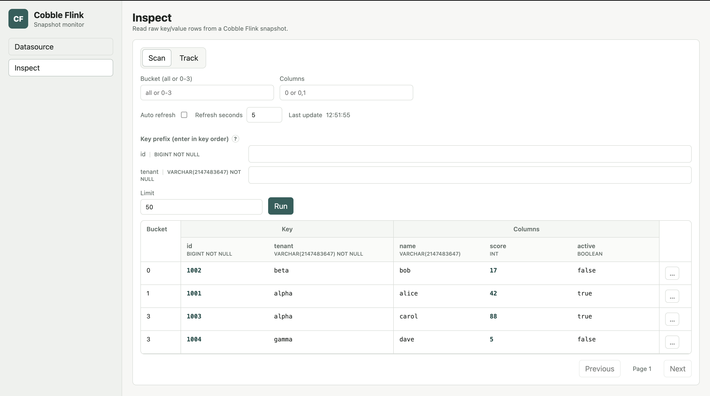

Sink Inspect
Use sink inspect to browse snapshots written by the Cobble SQL sink. The monitor opens the sink table root directly, so no checkpoint operator selection is needed.
Open A Sink Snapshot
On the Datasource page, open the Cobble sink table path and select latest or a concrete snapshot. latest follows the newest readable sink snapshot; choose a concrete snapshot when you need a stable result set.
Scan By Primary Key
When the sink snapshot contains schema metadata, the Inspect page shows each primary-key field in schema order. Leave every key field empty to scan the whole snapshot, or fill fields from left to right to narrow the result.
Every key before the last supplied key is an exact match. The last supplied key is a prefix match. For example, with primary key (id, tenant), entering id = 1001 and tenant = a finds rows whose tenant starts with a for id 1001.
You cannot skip a preceding key. If tenant is filled while id is empty, the monitor highlights id and explains the missing field.
Use Bucket to inspect one bucket, Limit to control page size, and Columns to request selected value-column indexes such as 0,2.

Read Typed Columns
With sink schema metadata, the result table expands primary-key fields and value columns into separate, named columns. Logical types appear below the field names, and the table scrolls horizontally when a table has many columns.
The row menu can track a row or copy its raw key and value. Track keeps the same typed presentation and can refresh multiple rows together.
Older Or Raw Sink Paths
Some existing sink paths may not include inspect schema metadata. The monitor still opens them and falls back to the raw key, raw columns, and the original UTF-8 prefix filter. Schema-aware decoding is an enhancement, not a requirement for reading a sink snapshot.